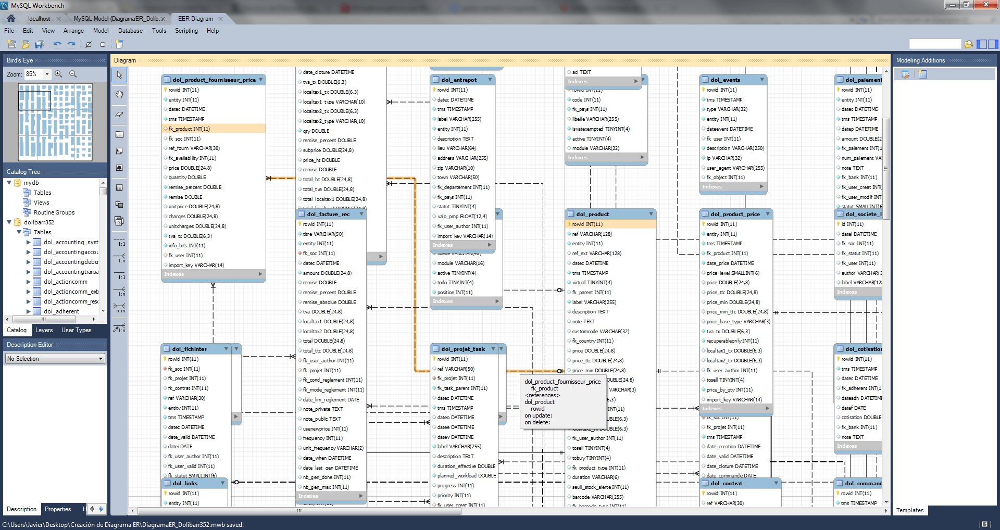

Bases de Datos MYSQL y ACCESS
Una base de datos es un conjunto de datos pertenecientes a un mismo contexto y almacenados sistemáticamente para su posterior uso. En este sentido; una biblioteca puede considerarse una base de datos compuesta en su mayoría por documentos y textos impresos en papel e indexados para su consulta.
Bases de Datos MYSQL
MySQL es un sistema de gestión de bases de datos relacional desarrollado bajo licencia dual: Licencia pública general/Licencia comercial por Oracle Corporation y está considerada como la base de datos de código abierto más popular del mundo, y una de las más populares en general junto a Oracle y Microsoft SQL Server, todo para entornos de desarrollo web.
MySQL fue inicialmente desarrollado por MySQL AB (empresa fundada por David Axmark, Allan Larsson y Michael Widenius). MySQL AB fue adquirida por Sun Microsystems en 2008, y ésta a su vez fue comprada por Oracle Corporation en 2010, la cual ya era dueña desde 2005 de Innobase Oy, empresa finlandesa desarrolladora del motor InnoDB para MySQL.
Bases de Datos Microsoft Access
Microsoft Access es un sistema de gestión de bases de datos incluido en el paquete ofimático denominado Microsoft 365, sucesor de Embedded Basic.
Access es un gestor de datos que utiliza los conceptos de bases de datos relacionales y pueden manejarse por medio de consultas e informes. Está adaptado para recopilar datos de otras utilidades como Excel, SharePoint, etc.
La aplicación permite recopilar información relativa a un asunto o propósito particular, como el seguimiento de pedidos de clientes o el mantenimiento de una colección de música, video juegos, etc.

Tipos de bases de Datos
| Nombre | Creador | Ultima version |
|---|---|---|
| MYSQL | Sun Microsystems | 8.0.24 |
| Microsoft Access | Microsoft | 14.0.61 |
| Mongo Db | MongoDB Inc. | 4.0.8 |
| MariaDB | MariaDB Corporation | 10.5.9 |
| PostgreSQL | PostgreSQL Global Development Group | 13.1 |